从「说一句话」到「本机真的执行完」，中间需要对话、工具调用、定时提醒、任务监控、沙箱与执行队列。 Personal Agent 把这些做成了一整套可运行的系统：React 前端 + FastAPI 后端 + SQLite 归档 + 一条 QQ 远程通道， 数据留在本机，手机上也能只读查看运行状态。
日常入口。对话里下指令，工具调用结果写回同一个界面；提醒、任务、记忆、额度各有自己的页面，而不是全塞进聊天框。
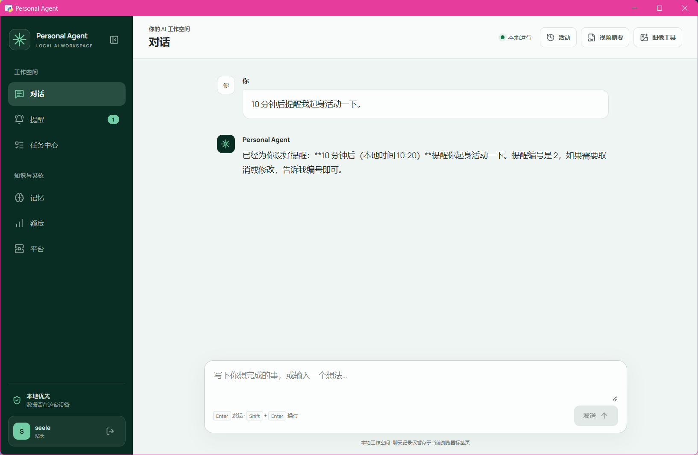
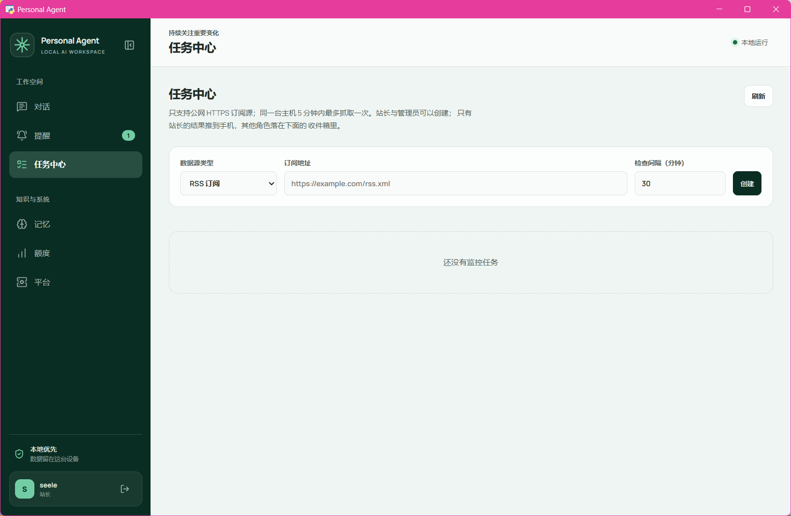
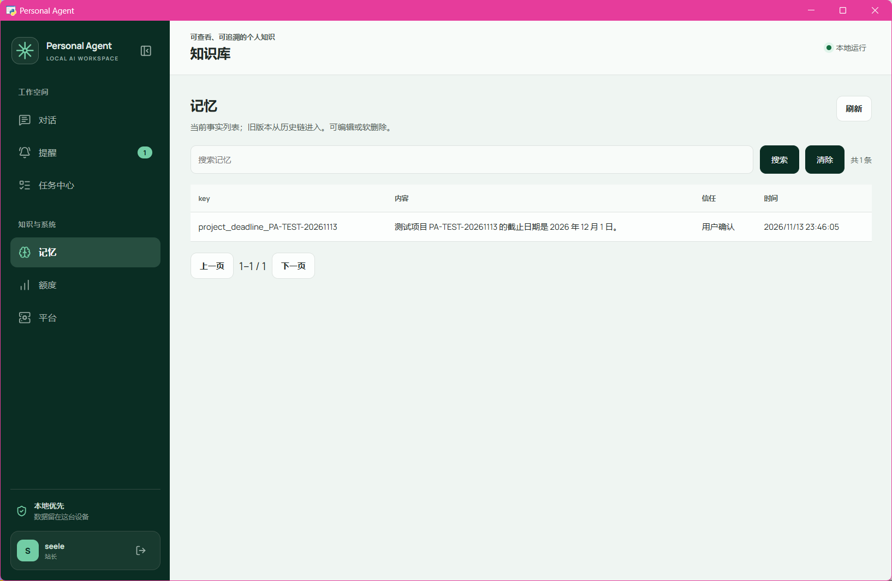
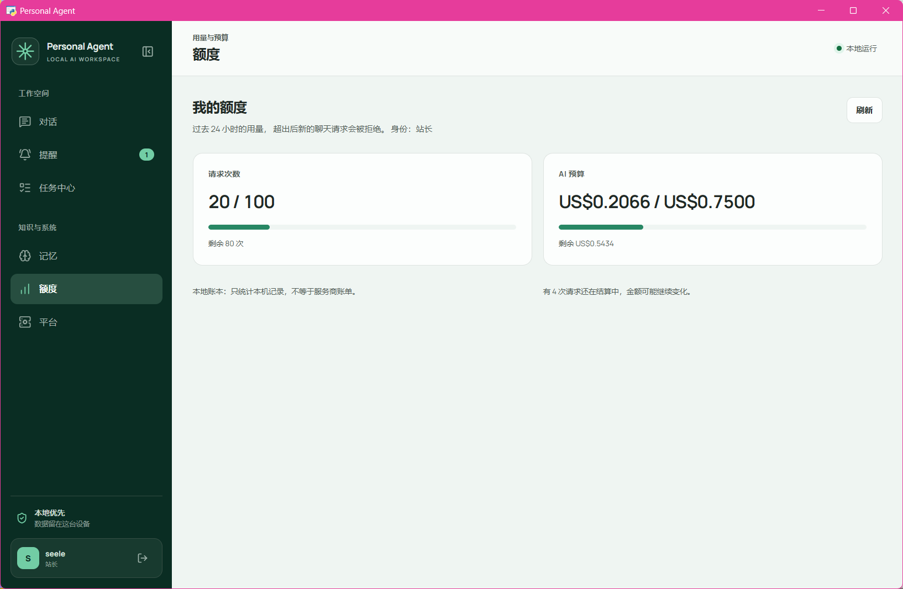
这一块是自己写的“小 Kubernetes”：节点、沙箱、执行队列、成功率窗口。难点不在界面，在于每个指标的口径必须先定死，否则数字会骗人。
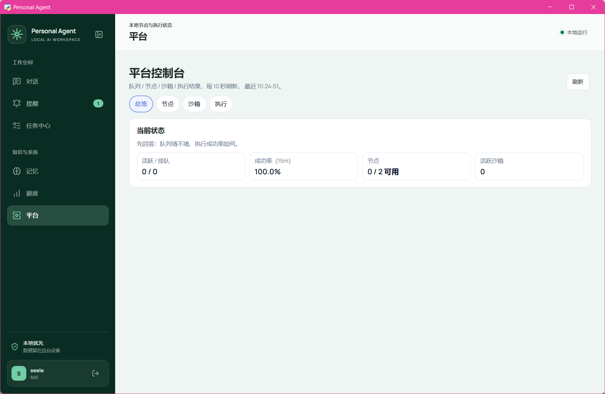
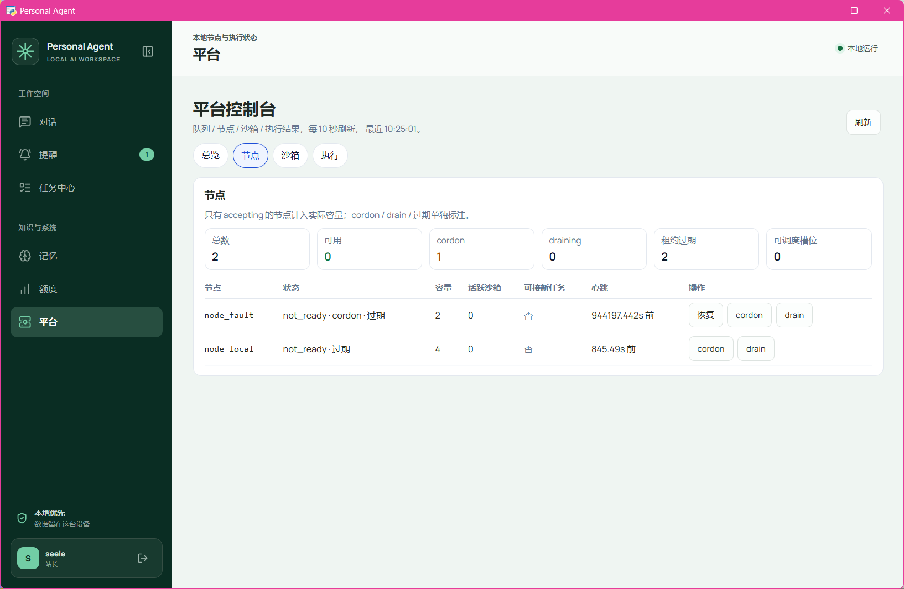
accepting 的节点计入实际容量；cordon / drain / 租约过期单独标注，避免“看着有机器其实不能接活”。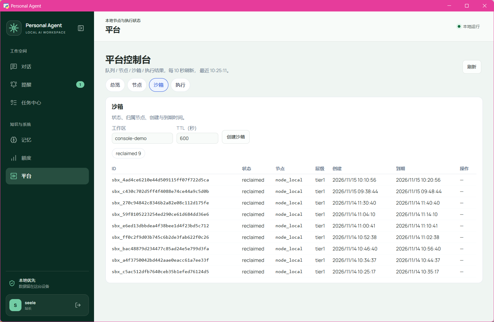
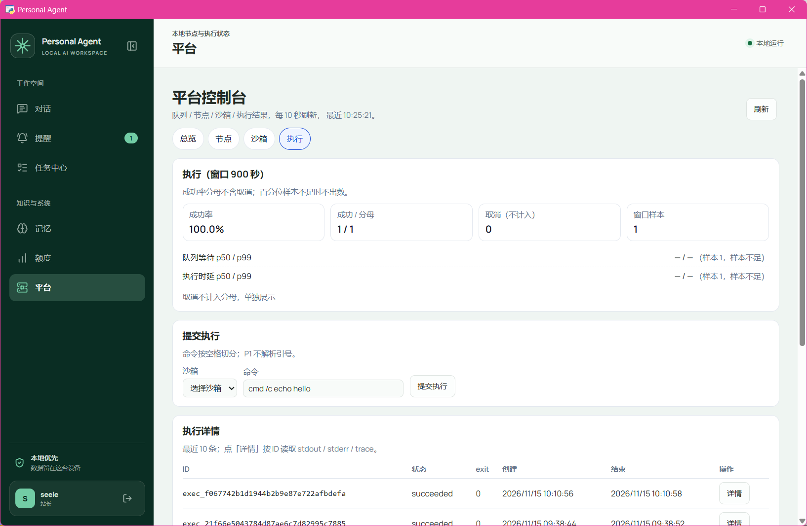
202 只表示“已接收”、不限流；hold 决策不等于扩容；可用容量按租约算，不按节点数算。
人在外面，用手机 QQ 给机器人发一句需求，本机 agent 自己查、自己画图、把成品发回聊天窗口。下面都是真实生成物。
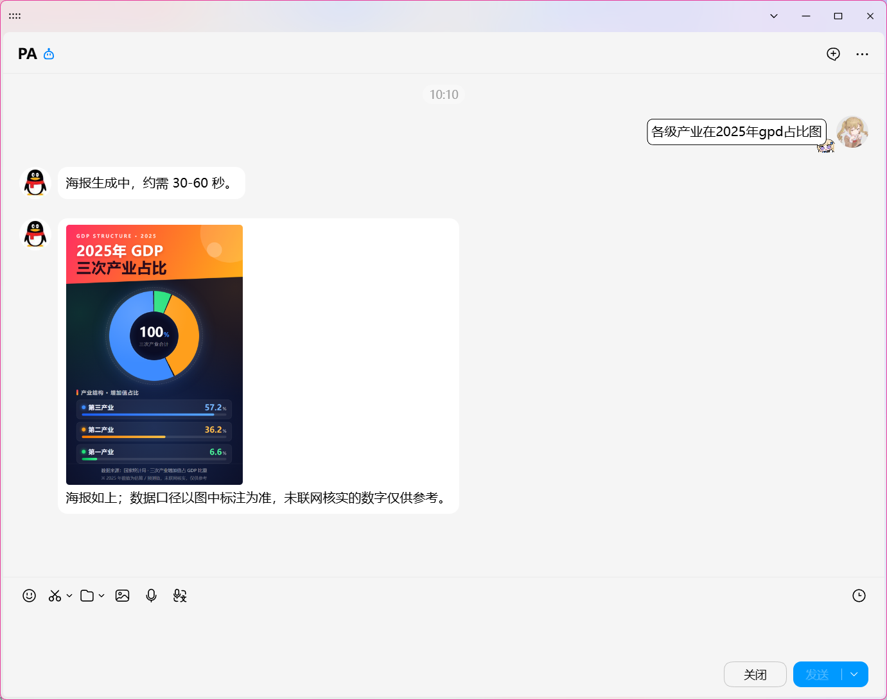
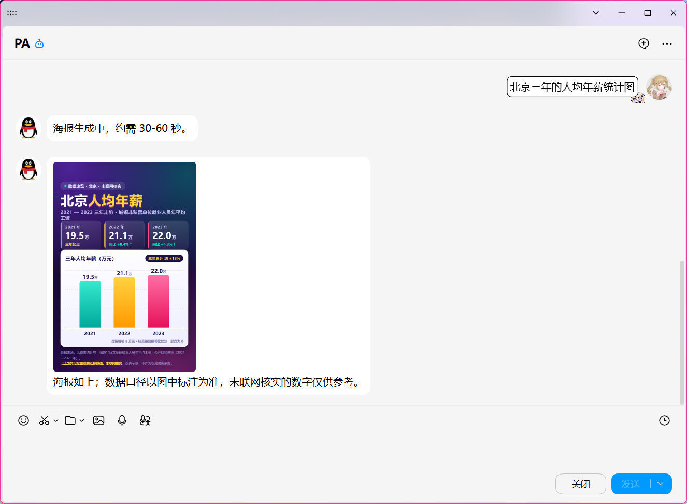
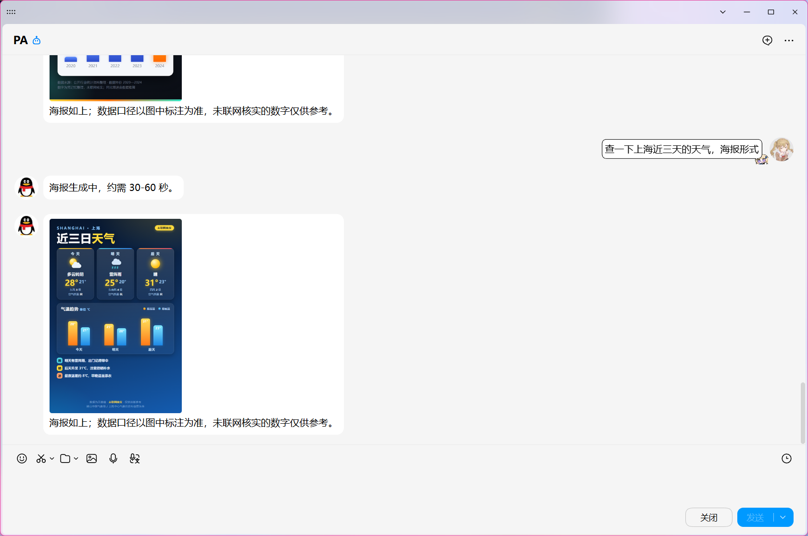
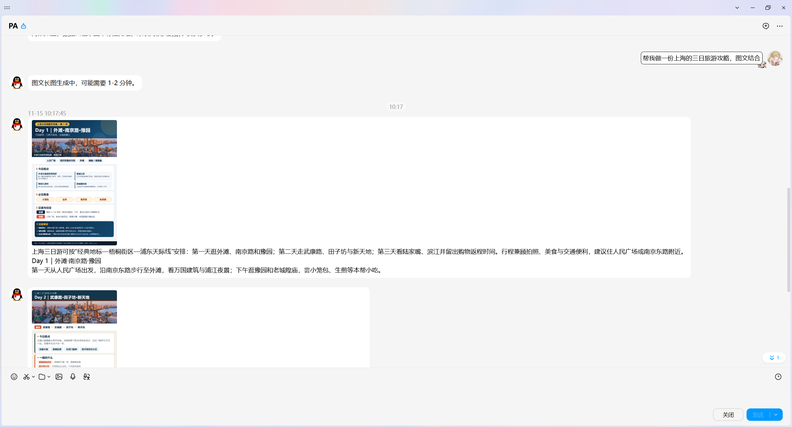
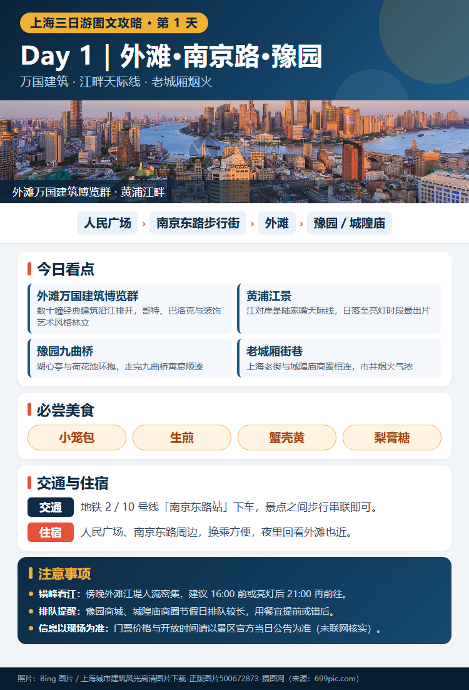
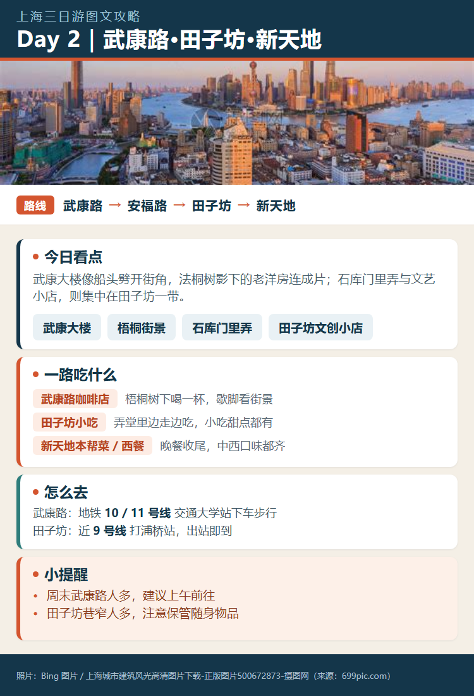
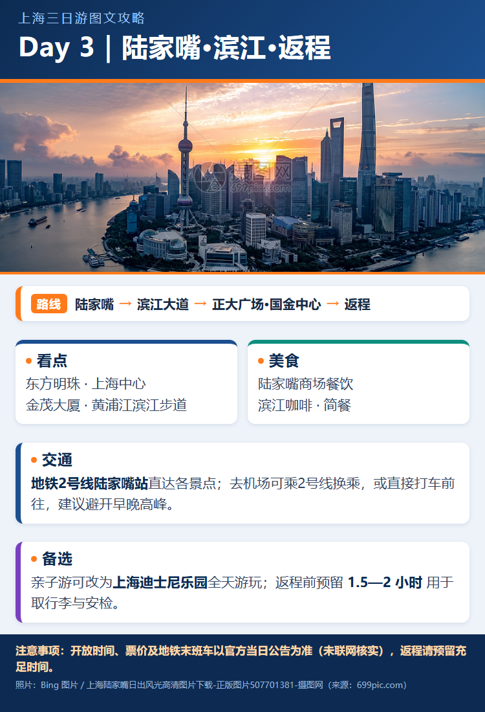
界面之外，真正花时间的是这些地方。